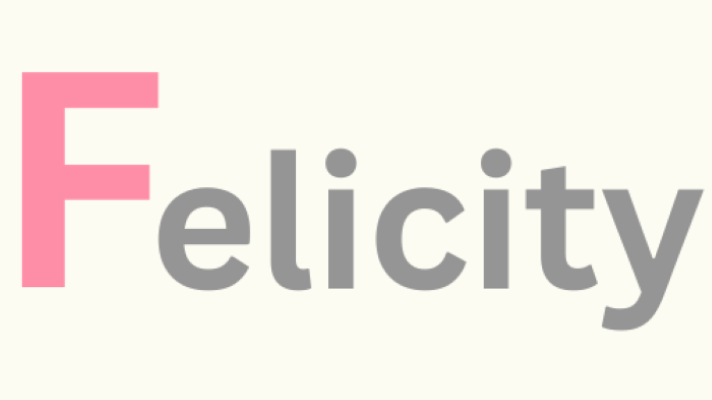

Amazon Leo · Project Kuiper
Flight Dynamics Operations Engineer
Real-time constellation safety, conjunction assessment, and pre-launch readiness at Amazon Leo (formerly Project Kuiper).


Real-time constellation safety, conjunction assessment, and pre-launch readiness at Amazon Leo (formerly Project Kuiper).
Supporting Amazon Leo (formerly Project Kuiper) across real-time constellation safety, conjunction assessment, and pre-launch readiness.
B.S., Aeronautics & Astronautics
University of Washington

Flight Dynamics Operations Engineer supporting Amazon Leo (formerly Project Kuiper) — real-time constellation safety and pre-launch readiness.
View Experience
B.S., Aeronautics & Astronautics from the University of Washington — SPACE Lab, NDCL, and additional technical work.
View Education
Technical write-ups spanning aeroengine design, controls, and experimental coursework from my B.S. in Aeronautics & Astronautics.
View ReportsConnect with me for updates on my work in flight dynamics and satellite operations.
View Profile
We launched KA-01, the first production satellites for Project Kuiper! Proud to be part of the front-line Flight Dynamics team helping make this mission a success.
View Post
Stay up-to-date with the latest news on Amazon’s Project Kuiper satellite constellation.
Read MoreContact
Always glad to talk flight dynamics, satellite operations, or new opportunities to collaborate.
felicitycundiff@gmail.com